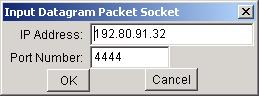
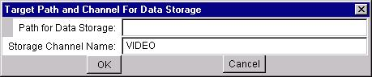
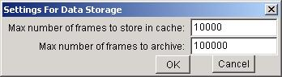

Example rbnbCapture Statistics Display
Introduction
Overview
Setup and StartupCommand Line Arguments
DataTurbine
Data Path
Channel
Cache Size
Archive Size
Input Socket
Autorun
Use Settings File
Usage InformationUser Interface Fields
Start Button
Stop Button
MenuBarFileOpenData
Socket
Close
ExitTarget
Settings
The rbnbCapture application provides a simple command line interface and displays acquisition statistics in a pop-up window.
The following figure shows an example rbnbCapture statistics display.
Example rbnbCapture Statistics Display
The user may initialize rbnbCapture's settings and start the
utility from the command line, or the user may start rbnbCapture
with default settings from the Applications menu of rbnbManager.
If a file named "CaptureSettings.dat" exists in the directory from which
rbnbManager
is run, rbnbCapture will use it to store and retrieve its settings
from one session to the next.
The data is sent to the specified DataTurbine.
The default DataTurbine is localhost:3333.
The data is stored in the data path. The data path is the name of a directory (UNIX) or folder (Windows/Mac) under the DataTurbine's home directory.
The default data path is automatically assigned by the DataTurbine. It consists of the host name of the machine running the rbnbCapture program, a dot, and a uniquely assigned number: "<host server>.<unique number>".
The data is stored in the DataTurbine under the specified channel name.
The default channel name is "VIDEO".
Specifies the maximum number of frames of data stored in the DataTurbine's ring buffer cache. The DagtaTurbine frames are built from one or more datagram packets, with each packet being assigned an interval in the frame time-stamp with a start time equal to the time the packet was acquired by rbnbCapture.
The default is 10,000 frames.
Specifies the maximum number of frames of data stored in the DataTurbine's ring buffer archive. The DataTurbine frames are built from one or more datagram packets, with each packet being assigned an interval in the frame time-stamp with a start time equal to the time the packet was acquired by rbnbCapture.
By default archiving is on, and the archive is 100,000 frames.
Specifies the UDP address of the input datagram packet socket. See below for more details.
Causes rbnbCapture to begin capturing UDP packets immediately upon start-up.
This argument signals rbnbCapture to use the file named "CaptureSettings.dat" to store and retrieve its settings. The file must already exist in the directory from which rbnbCapture is run.
Does not start the rbnbCapture application, but causes it to display its command line usage information.
The following is an example of the hosts dialog:

The input socket may have a unicast, broadcast, or multicast UDP address plus a port.
Unicast addresses specify a single interface of a particular host for one-to-one communication. To listen on a unicast port, specify the local host, i.e. either 127.0.0.1 or a specific local interface IP address. A remote sender then opens this address to send data. Messages are delivered to the first receiver listening on that interface and port, so typically you will want to select a unique port.
Broadcast addresses specify all hosts on a specific network. Messages are delivered to everyone listening on that network and port. Broadcast addresses have the form xxx.xxx.xxx.255, as described in RFC1122 (they talk about host -1, which translates to 255 in the standard dotted IP address format used here).
Multicast addresses specify all hosts in a specific multicast group. Messages are delivered to everyone listening to that multicast group and port. Multicast addresses are in the range 224.0.0.0 to 239.255.255.255 as described in RFC1112.
The input address is parsed to determine if the socket is unicast, broadcast,
or multicast.
The following is an example of the Target Dialog.

The following is an example of the Settings Dialog.
